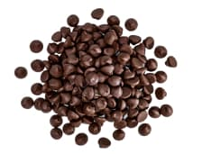

<section class="section unique-components">
  <div class="container">
    <h2 class="section-title title">
      It all adds up to one exceptional
      <span class="word">taste</span> sensation
    </h2>

    <p class="paragraph">
      At Simply Chocolate, we believe that the secret to exceptional chocolate
      is in the details. From the sourcing of the finest ingredients to the
      careful crafting of each individual piece, every step of our process adds
      up to one exceptional taste sensation.
    </p>

    <ul class="components-list list">
      <li class="item components-item">
        <div class="picture-box">
          <picture>
            <source
              srcset="
                ../img/unique-components/chocolate-desktop.png    1x,
                ../img/unique-components/chocolate-desktop@2x.png 2x
              "
              media="(min-width: 768px)" />
            </picture>
        </div>

        <h3 class="item-title">Milk chocolate</h3>

        <div class="components-thumb">
          <h3 class="thumb-title">Milk chocolate</h3>
          <div class="type-box">
            <span class="component-type">chocolate</span
            ><span class="last component-type">the benefits</span>
          </div>
          <p class="thumb-description">
            Milk chocolate is a solid chocolate confectionery containing cocoa,
            sugar and milk. It is the most consumed type of chocolate. Chocolate
            was originally sold and consumed as a beverage in pre-Columbian
            times. Although four-fifths of all milk chocolate is sold in the
            United States and Europe, increasingly large amounts are consumed in
            China and Latin America.
          </p>
        </div>
      </li>

      <li class="item components-item">
        <div class="picture-box">
          <picture>
            <source
              srcset="
                ../img/unique-components/milk-desktop.jpg    1x,
                ../img/unique-components/milk-desktop@2x.jpg 2x
              "
              media="(min-width: 768px)" />
            </picture>
        </div>

        <h3 class="item-title">Milk</h3>

        <div class="components-thumb">
          <h3 class="thumb-title">Milk</h3>
          <div class="type-box">
            <span class="component-type">milk</span
            ><span class="last component-type">the benefits</span>
          </div>
          <p class="thumb-description">
            Milk is a white liquid food produced by the mammary glands of
            mammals. It is the primary source of nutrition for young mammals
            (including breastfed human infants) before they are able to digest
            solid food.Early-lactation milk, which is called colostrum, contains
            antibodies that strengthen the immune system, and thus reduces the
            risk of many diseases. Milk contains many nutrients, including
            protein and lactose.
          </p>
        </div>
      </li>

      <li class="item components-item">
        <div class="picture-box">
          <picture>
            <source
              srcset="
                ../img/unique-components/nuts-desktop.png    1x,
                ../img/unique-components/nuts-desktop@2x.png 2x
              "
              media="(min-width: 768px)" />
            </picture>
        </div>

        <h3 class="item-title">Nuts</h3>

        <div class="components-thumb">
          <h3 class="thumb-title">Nuts</h3>
          <div class="type-box">
            <span class="component-type">nuts</span
            ><span class="last component-type">the benefits</span>
          </div>
          <p class="thumb-description">
            Almonds, pistachios, and walnuts are some types of nuts that contain
            healthy nutrients. When eaten as part of a nutrient-dense diet,
            these 9 nuts may offer benefits such as reducing your risk of heart
            disease. They're a good source of fiber, healthy fats, and plant
            protein. Plus, they're great on their own, paired with fruit, or
            added to dishes like salads, desserts, and grains.
          </p>
        </div>
      </li>

      <li class="item components-item">
        <div class="picture-box">
          <picture>
            <source
              srcset="
                ../img/unique-components/coffee-desktop.jpg    1x,
                ../img/unique-components/coffee-desktop@2x.jpg 2x
              "
              media="(min-width: 768px)" />
            </picture>
        </div>

        <h3 class="item-title">Semi-sweet chocolate</h3>

        <div class="components-thumb">
          <h3 class="thumb-title">Semi-sweet chocolate</h3>
          <div class="type-box">
            <span class="component-type">sweet chocolate</span
            ><span class="last component-type">the benefits</span>
          </div>
          <p class="thumb-description">
            Semi-sweet chocolate has a cocoa solid content of 35 to 65%. One of
            the best ways to gain an understanding of this type of chocolate is
            to compare it to a different type of chocolate. Semisweet is darker
            than milk chocolate. In a taste comparison, it has a slightly bitter
            taste whereas milk chocolate is sweeter and more mellow. This
            delectable flavor of chocolate is very versatile.
          </p>
        </div>
      </li>
    </ul>
  </div>
</section>
